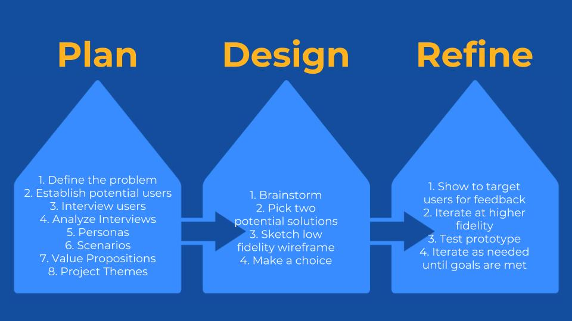
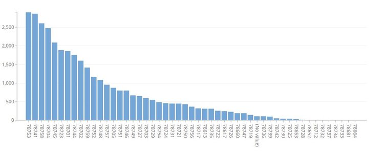
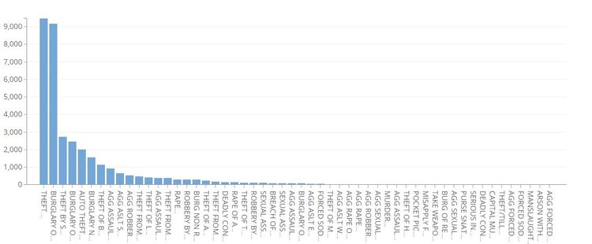
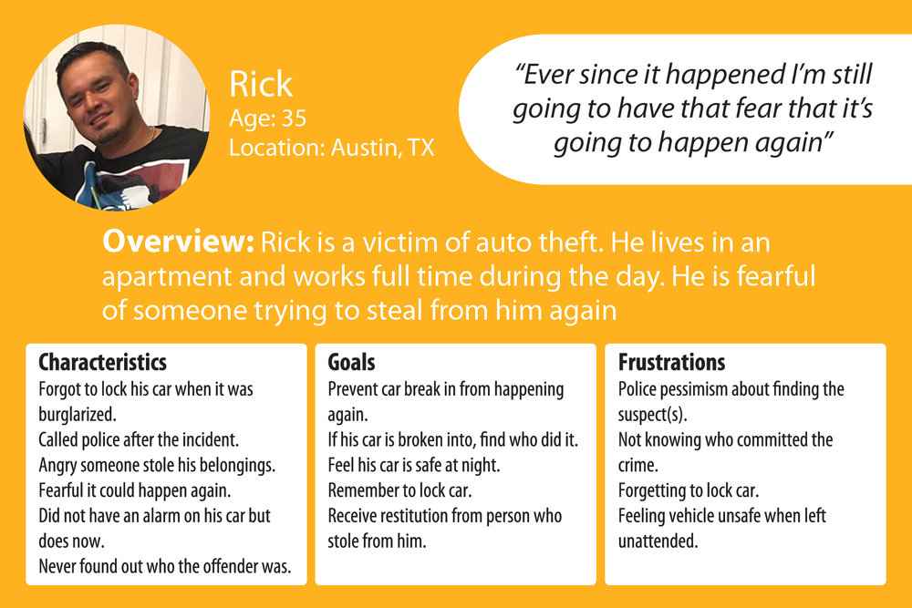
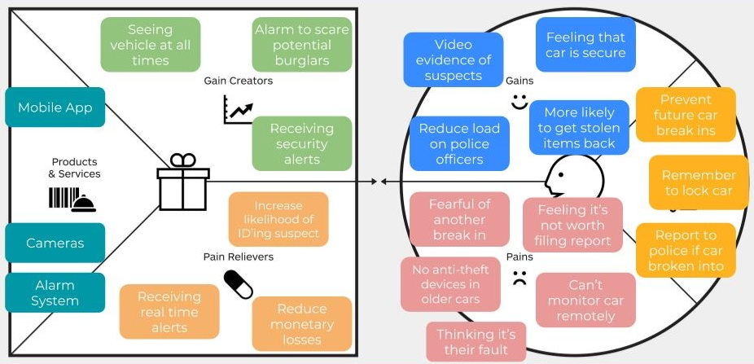
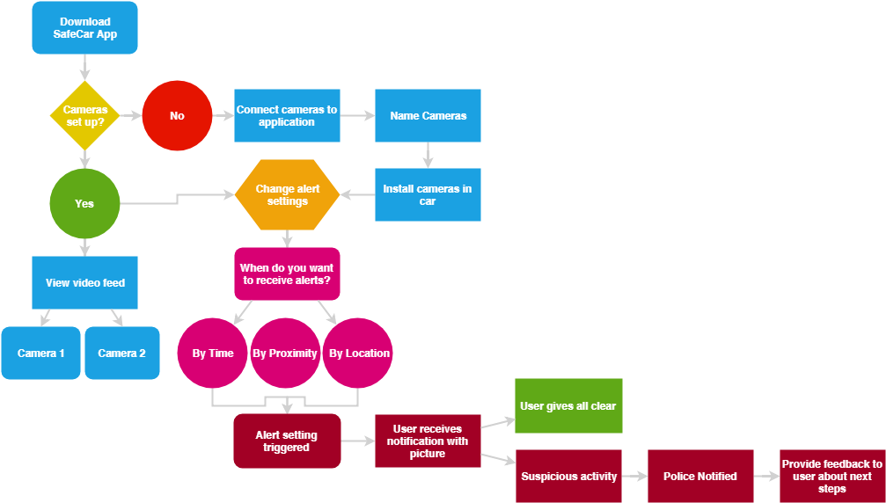
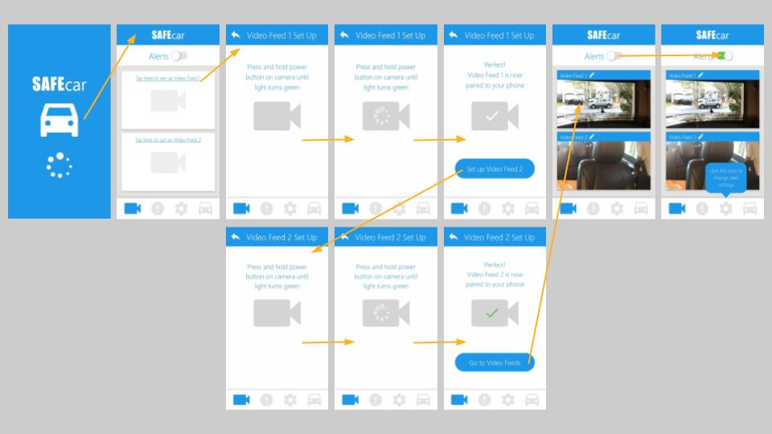
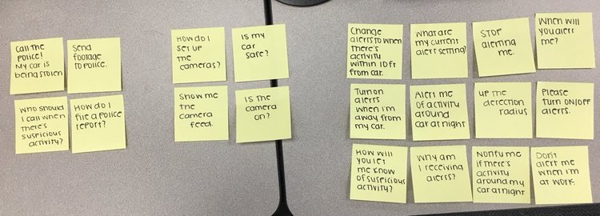
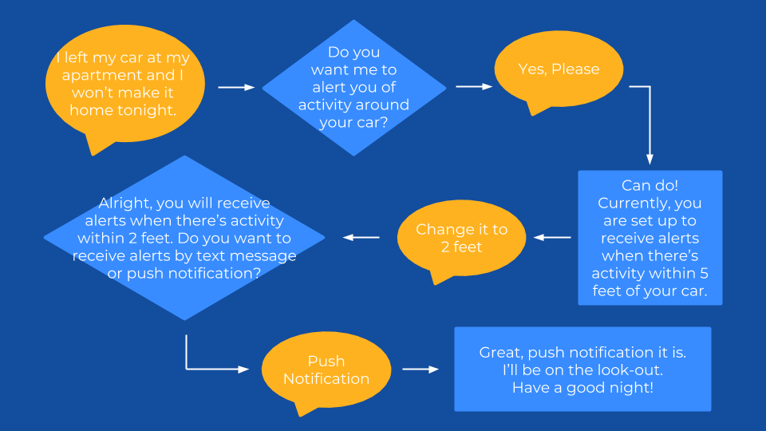

SafeCar
Generative Research
December 2018
Skills Used
- Data Analysis
- User Interviews
- Creating empathy maps
- Creating Personas
- Mind Mapping
- Affinity Diagramming
- Wireframing in Adobe XD
- Designing a mobile app
- Designing a conversational UI
- Writing Usability Test Script
- Usability Testing
- Analyzing Qualitative Data
- Synthesizing Data into Actionable Findings
Proposed Design Process
Before starting this project I outlined a design process to help keep this project moving forward.
The Data
Austin 2017 Annual Crime by Zip Code
Austin 2017 Annual Crime by Type of Crime
I started my research by looking at 2017 crimes in Austin by zip code. Then, I looked into what kinds of crimes were being committed. Theft and burglary of vehicle dominated the annual crime stats in 2017.
To investigate possible design problems surrounding theft and car burglaries I decided to interview 3 victims of vehicle theft.
User Interviews
My objective for the interviews was to learn about people’s experiences being a victim of auto theft and the process they went through to report the theft, retrieve stolen items, and preventative measures they took afterwards.
Persona
From commonalities found in the empathy maps, I created Rick as a persona.
I outlined his characteristics, goals, and frustrations he experienced being a victim of car theft.
This persona helped clarify who I was designing for and the problems I would attempt to solve.
The Problem
From the data provided by the City of Austin and my user interviews I narrowed in on a problem facing my user, Rick.
Problem: Users are fearful their car will be broken into and police won’t catch who did it.
Hypothesis: If users have a way to monitor their care remotely and receive alerts then they will become less fearful of future break ins and police will be more likely to catch burglars.
Value Proposition
Source: strategyzer.com
Keeping my persona in mind I filled out a value proposition for a product that would help Rick monitor his car remotely and receive alerts for suspicious activity.
Filling out the value proposition allowed me to see the benefits of potential product features for Rick and how other potential users, such as the police, could benefit from it too.
Project Themes
Based on the proposed values, I outlined some project themes to further clarify my design goals. Outlining these project themes also gave me a chance to brainstorm potential features that could help solve pain points for Rick. As I progressed into designing a Conversational UI I found my project themes also served as a great reference guide for voice and tone.
Advise
Have an alert system in place to warn user when someone is approaching their vehicle. Provide instructions to user if a break in occurs.
Reassure
Users are concerned with the security of their vehicles. They should have easy access to a live camera feed to check on their cars when feeling worried.
Integrate
Victims of car theft need a way to send video evidence to police and easily fill out a Police report. Ideally the application would connect directly to police department systems.
User Flow
Creating a user flow allowed me to map out the steps the user would take to accomplish a task.
Additionally, it revealed alternative flows and what features could be grouped together in the UI.
Ideation Sketching
Once I established a user flow, I began ideating in low fidelity so I could work out high level layout and features of the application quickly before moving into higher fidelities.
Based on interviews I knew my user would want to receive alerts and be able to monitor their car at all times so I chose to design a mobile app.
High Fidelity Wireframes
As I moved into high fidelity wireframing I reconsidered what information would be important to Rick when he first opened the app.
- So, instead of having an overview of his car I decided to have the first thing he sees be the video feed.
- After designing a graphical interface I began to explore if a conversational UI would better meet the user’s needs.
Conversational UI
Affinity Diagramming

User Utterances
User Intents
Starting out, I wrote out possible utterances a user would say to the conversational ui.
Then, I grouped them by similar user intents or goals.
- This illustrated how a conversational ui would be best utilized when the user wants to know what their alert settings are or change the settings.
Mind Mapping
Focusing on the alert settings, I created a mind map of entities the conversational UI would need to recognize and the relationships between them.
- The mind map helped me see which entities are dependent on each other
- and instances where it’d be important to have the Voice UI ask questions to clarify the user’s intent.
Scenario
Rick is spending the night at a friend’s house and left his car at his apartment. His car has been broken into before and despite making sure it was locked he is still worried someone may try to burglarize or steal his car again. Rick needs a way to remotely monitor his car and receive alerts for suspicious activity around his car.
Conversational Flow Diagram
After exploring a screen and conversational ui I feel the best way to move forward with this design would be a combination of both. I need to include a screen interface so users can see the video feed of their cars. However, integrating a voice UI could decrease the amount of time it takes the user to change their alert settings (i’d have to evaluate this during usability testing). Also, a Voice UI reinforces the reassuring tone I want to convey to users.
Retrospective
Based on the design process laid out initially, I felt I followed it up until the refine phase.
- I wasn’t able to test and get feedback from target users because of time constraints.
I did slightly deviate during the design phase because instead of choosing between two potential solutions I decided on using a combination of a screen and conversational UI to solve my user’s problem.
I feel the SafeCar app and voice UI do help reduce Rick’s fear of future car break ins by giving him a way to remotely monitor his car.
- However, I would like to conduct usability testing to determine if any alert settings can be removed or changed and to gather more user utterances for the conversational UI.
- Since I focused primarily on the alert settings feature of the app, I failed to address how video evidence could be integrated with police reporting systems to increase the likelihood of catching perpetrators and retrieving stolen items.
Next Steps
- Push the screen UI into higher fidelities
- Wireframe other features in the app
- Explore other scenarios, considering threshold settings
- Think about how the conversational UI would assist users in other use cases
- Possibly include a feature that would detect when the user is in a high crime area and automatically change alert settings accordingly
- Integrating the features with existing home security applications